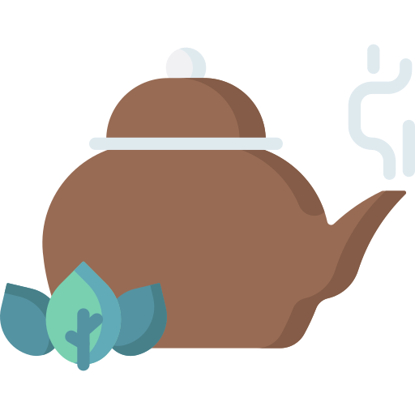

肉圓，台灣特色小吃。最有名的發源地是：彰化（彰化、北斗、員林）
嘉義火雞肉飯，台灣嘉義地區知名小吃之一。
西螺醬油，台灣雲林地區重要一級產業特產，因為水質、溫度和濕度的合宜，雲林西螺號稱臺灣的「醬油王國」。
大湖草莓，台灣苗栗縣大湖鄉的特產，氣候溫和多雨，以草莓聞名全國，素有臺灣草莓王國雅號。
太陽餅，是一種甜餡薄餅，一般內餡是麥芽糖，源起於台中市神岡區社口一帶林家崑派的麥芽餅，是台灣台中市的點心，為中臺灣的名產之一。

凍頂烏龍茶（舊稱水沙連之茶），生產自臺灣南投縣鹿谷鄉，主要以青心烏龍當作原料製作的烏龍茶，有「北包種、南凍頂」之說。
西瓜